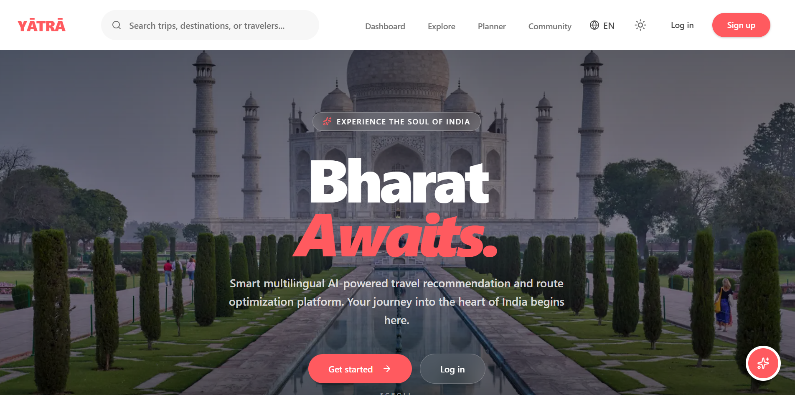
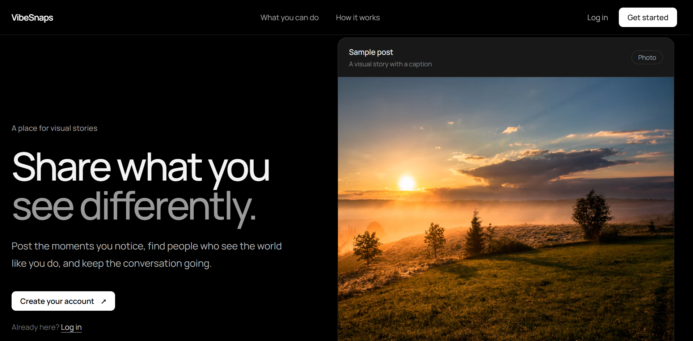
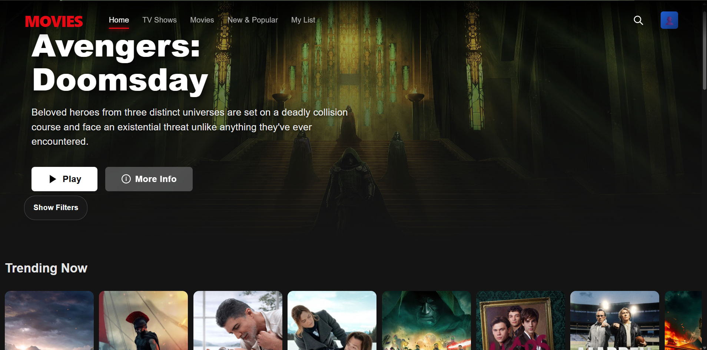

01VIEW LIVE ↗TRAVEL / FRONTEND
YātrāMatrix
A travel platform for discovering destinations and planning routes across India.
Hyderabad, India / B.Tech CSE · 2028
Computer science student / Aspiring AI engineer
Building software.
Exploring intelligence.
Solving problems.
I like the moment a hard problem becomes something useful. I build software, strengthen my fundamentals, and explore how AI can make systems more capable.

01 A point of view
I like the hard problems, the clean solution, and the moment an idea starts working in the real world.
02 Selected work
A collection of ideas explored through interfaces, full stack systems, and a lot of iteration.

01VIEW LIVE ↗TRAVEL / FRONTEND
A travel platform for discovering destinations and planning routes across India.

02VIEW LIVE ↗SOCIAL / FULL STACK
A social application with authentication, profiles, posts, and connected backend APIs.

03VIEW LIVE ↗DISCOVERY / API
A movie discovery app connecting film browsing and details through the TMDB API.
03 A little about me
I’m a third-year B.Tech Computer Science student at B V Raju Institute of Technology in Hyderabad, graduating in 2028. I currently hold a 9.04 CGPA.
My interests span software development, problem-solving, machine learning, and Generative AI. I want to build practical, scalable systems where strong engineering and intelligent software meet.
Have an opportunity in mind?04 Toolkit
A growing toolkit, shaped by what I’m building and what I’m learning next.
05 Practice, repeated
problems solved on LeetCode
Mostly C++ and data structures & algorithms. Each problem is another way to get a little clearer about how to think.
Find me on LeetCodeStart with the problem.
Stay for the better solution.
06 How I work
A simple loop for turning a fuzzy idea into something useful, then making it better.
Understand the problem and who it affects.
Find a clear approach and shape the system.
Write maintainable code and connect the pieces.
Check assumptions, debug, and validate behavior.
Refine what works and keep learning.
07 The next step
For software internships, AI projects, or a thoughtful collaboration, I’d like to hear from you.
Start a conversation